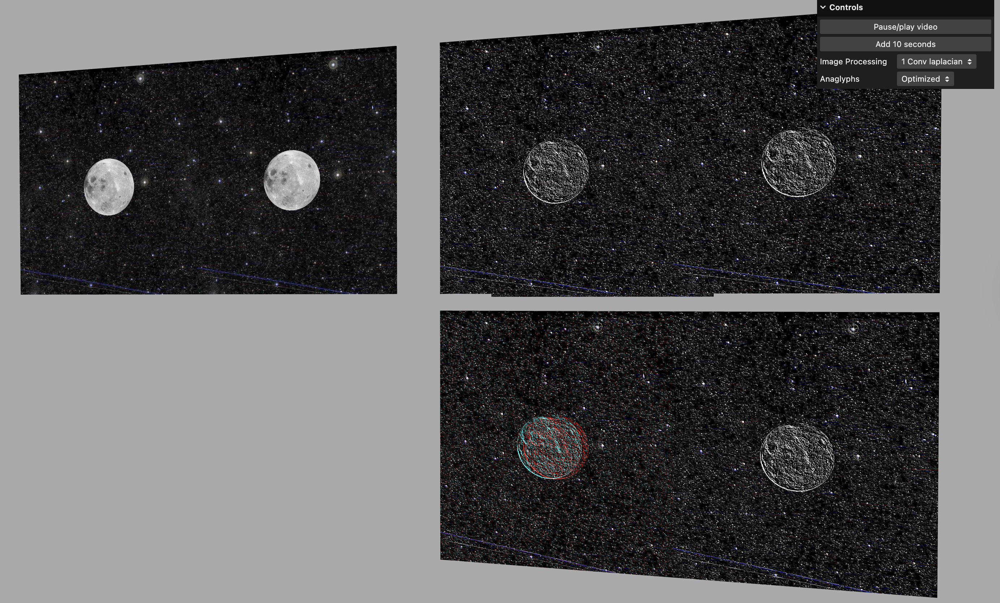
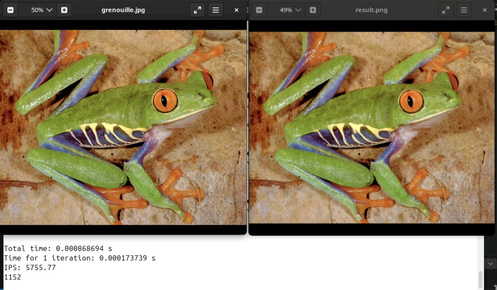
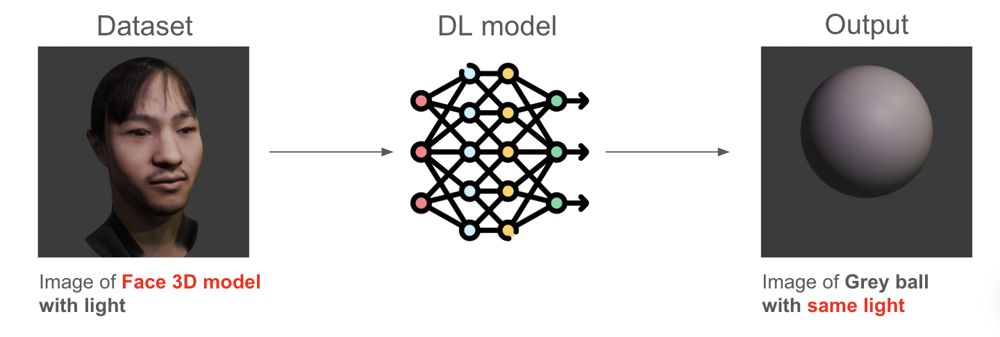

シェーダー理解用課題
vertexShader，fragmentShader，レンダリングパイプラインの理解のために作成したプログラムです．左のプログラムは宇宙空間を進行しているような効果をfragmentShaderで作っており，右のプログラムは各頂点の持つ色情報によって頂点のZ軸座標と光の法線方向をvertexShaderで変更しています．
使用言語等：GLSL，Javascript，WebGL
AI teacher on your desk
AI teacher on your deskは，AIを活用したMixed Reality(MR)学習支援アプリケーションです．ユーザーはヘッドマウントディスプレイを通して机上に表示されるAI教師とリアルタイムにコミュニケーションをとることができます．現在開発途中ですが既に実装できた機能として，AI先生の3DモデルをMR表示する機能，Webカメラで手書きの計算式等の画像を撮影する機能，Vision Language Modelに画像を入力しテキストを生成する機能，生成したテキストを3D空間内に表示する機能等があります．今後，これらの機能をリアルタイムに行えるようにして，音声でのコミュニケーション機能などを追加していく予定です．
使用言語等：Python, Javascript，WebGL, llama.cpp, Qwen2.5-VL
ライティング
This project simulates a room lighting setup, allowing you to adjust different types of lighting. Try modifying the parameters in the GUI.
使用言語等：GLSL，Javascript，WebGL
Augmented Reality(AR) ロボットアーム
ロボットアームの3Dモデルを作成し動作をシミュレーションするARブラウザアプリケーションを作成しました． スマートフォンやヘッドマウントディスプレイから"START XR"をクリックすると，現実世界にロボットアームが出現する体験ができます．
使用言語等：GLSL，Javascript，WebGL
リアルタイム画像処理（ラプラシアンフィルター，アナグリフ）
ステレオビデオに対してリアルタイムでガウシアンフィルター，ラプラシアンフィルター，セパラブルフィルター等のフィルター処理（画像内右上）とアナグリフ画像の生成（画像内右下）を行うプログラムを作成しました．アプリケーション上では右上のGUIからフィルタリングとアナグリフの種類を変更できます．
※アナグリフ：ステレオ画像に赤と青などの色フィルターを適用し，立体的に見える画像を作成する手法です．
使用言語等：GLSL，Javascript，WebGL
ガウシアンフィルターの並列化
画像にガウシアンフィルターを施す処理を行うプログラムを作成しました．左側の画像が元画像で右側がガウシアンフィルターを適用した結果画像です．右の画像の方がフィルタリングによって少しスムースになっています．また，パラレルコンピューティングの理解のためにCUDAとOpenMPを使用したプログラムをそれぞれ作成し，ベンチマークテスト（画像内下のスコア）を行いました．
使用言語等：C++，CUDA，OpenMP
AIによる光の模倣生成
顔に光が照射されている画像を入力すると，グレイのボールに同様の光が照射されている画像を出力するDeep learning modelを作成しました．また，このプロジェクトでは現実の画像の代わりに顔の3Dモデルを作成し，光の照射をBlender上でシミュレーションした画像をデータセットとして使用しました．
顔の3Dモデルは左上の画像のように主に二通りの手法を用いて作成しました．方法1では現実の顔画像をBlender上で3Dモデル化し，方法2では生成AIによって顔画像を生成しさらに3次元再構成AIによって3Dモデル化しました．方法2はデータの生成工程がコンピューター上ですべて完結し自動化することが可能なため無限にデータを作成できるのが強みです．本プロジェクでは最終的に1600セットのデータを生成し，1200セットを学習に用いました．モデルのアーキテクチャはU-net，誤差関数にはL1 lossを使用しました．学習後，現実の顔画像に対してテストを行った結果が右上の画像です．入力画像の光をボール上に模倣できていることが確認できます．
使用言語等：Python，Pytorch
担当箇所：方法1での顔モデルの生成，モデルの学習プログラムの作成
チームメンバー：Aswin Vattapparambathu Jayaprakash，Pol Sturlese Ruiz
アイトラッキング

明示的に表示されたタイマーが課題のパフォーマンスに影響を与えるかどうかをアイトラッキングを用いて確かめたプロジェクトです．被験者を，タイマーを表示するグループとタイマーを表示しないグループに分け，間違い探し課題に対しての視線の動きや課題のパフォーマンスを比較しました．左の図が被験者の視線の動きを可視化したもので，視線の固定（丸）と素早い動き（線）を表しており，課題中被験者が画面上部のタイマーを何度か見ていることが確認できます．また，右の図は視線の角速度の計算結果の一例で，尖った山は視線が大きく動いたことを示しています．このように計算された角速度に対して閾値を設定し，視線の固定と素早い動きを分類することで左図のような結果を得ることができます．
使用言語等：Python
担当箇所：プロジェクト全体の進行管理・取りまとめ，実験の実施，視線の角速度の計算コードの作成
チームメンバー：Aswin Vattapparambathu Jayaprakash，Yirga Molla，Suleman Anwar，Pol Sturlese Ruiz， Yuya Haga，Haruka Nagao，Dinh Hoang Dai